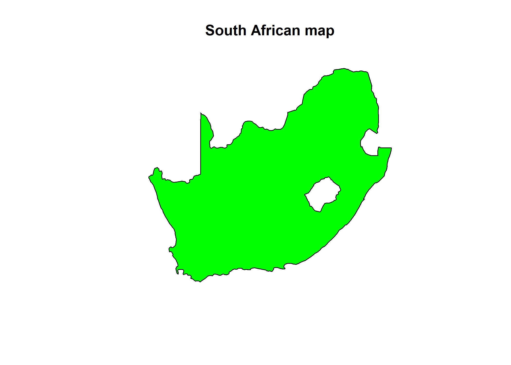
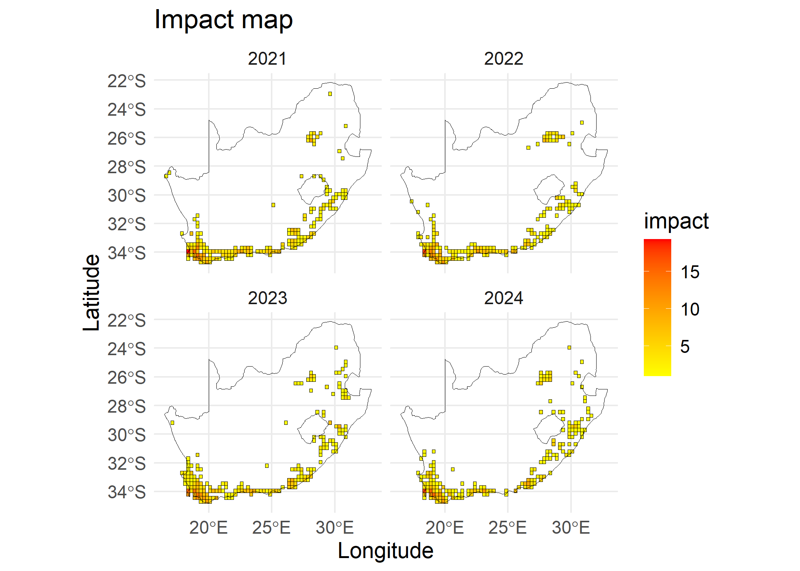
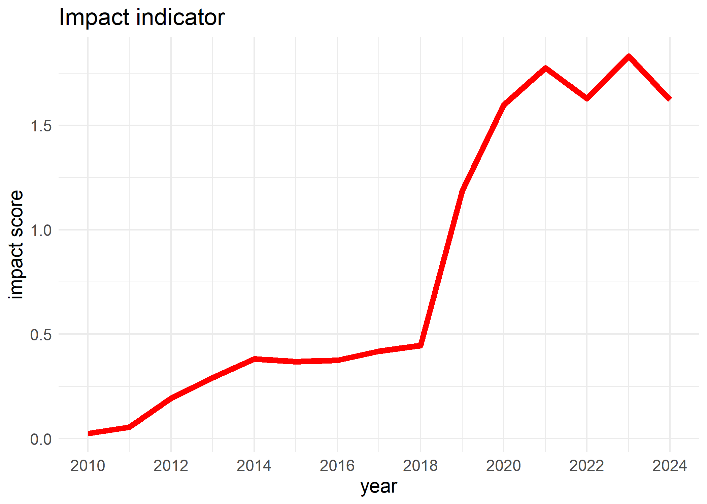
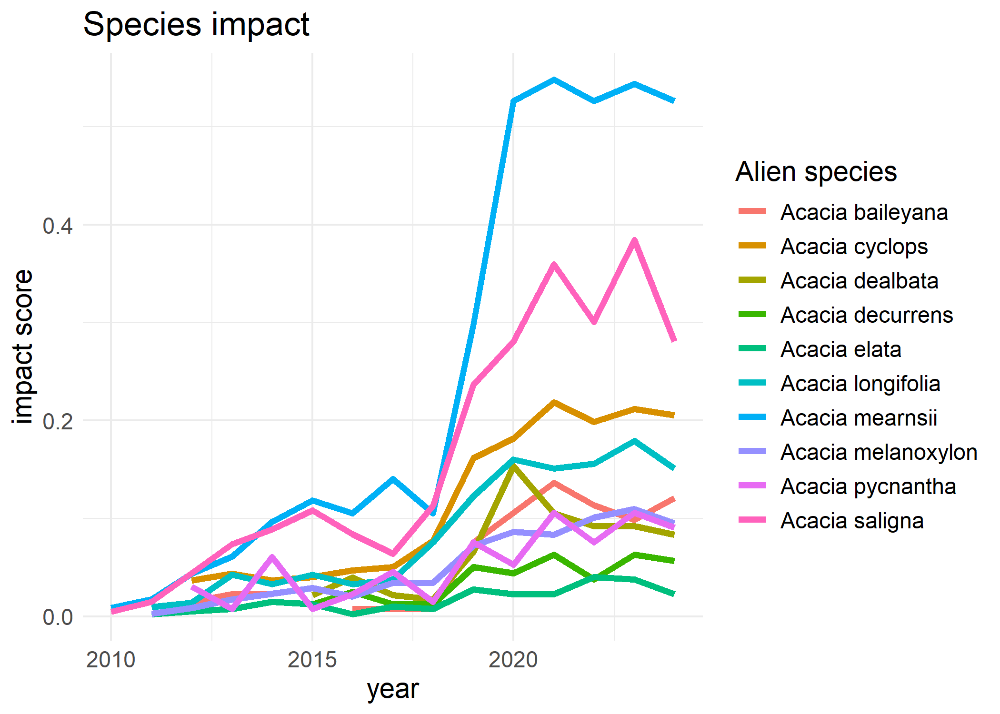
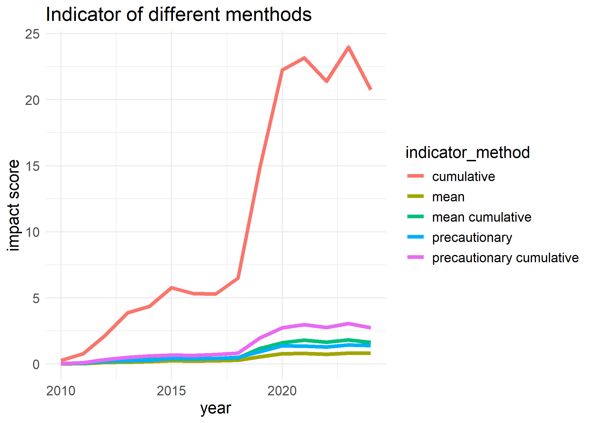

The goal of impIndicator is to allow users to seamlessly calculate and visualise the impact of alien taxa and individual species in a given area. It calculates and visualises impact per site as a map. It takes in GBIF occurrence data and EICAT assessment list. It enables users to choose from various methods of calculating impact indicators based on different studies.
The impIndicator produces three main products and can be useful as stated below:
- impact indicator
The impact indicator offers a nuanced representation of the trends of biological invasions of an area (local, regional, or global scales). By tracking the increase and decrease of ecological threats over time, this product provides insights into the dynamics of invasive alien species impacts, helping assess whether current management practices are effective or need adjustment. The temporal analysis of impact indicator enables targeted resource allocation, fostering proactive interventions to mitigate biodiversity loss and ecosystem degradation.
- site impact
The site impact as a map serves as a visual and analytical tool to represent the intensity of biological invasions across different parts of an area. By enabling spatial comparisons—such as between provinces, states, or conservation areas—it highlights hotspots and areas at risk of invasion impact. This spatial data is useful for prioritising management actions, coordinating restoration projects, and fostering cross-regional collaboration to address invasive species impacts effectively.
- species impact
The species impact produces the trends of individual invasive alien species, enabling a species-specific impact caused by invasions. This data supports comparisons of individual species’ impacts, revealing their roles and interactions within invaded area. The species impact is invaluable for prioritising species-specific management efforts, informing eradication strategies, and advancing research on alien species’ ecological roles and adaptation patterns.
Installation
You can install the development version of impIndicator from GitHub with:
# install.packages("remotes")
remotes::install_github("b-cubed-eu/impIndicator")Demonstration
This Markdown demonstrates the computation and visualisation of impact indicator of biological invasions using the impact_indicator() to compute impact indicator of alien taxa, the species_impact() to compute impact indicator per species, and the site_impact() to compute impact indicator per site. The functions feeds in species GBIF occurrence cube from the b3gbi::process_cube() using taxa_cube() and
Environmental Impact Classification of Alien Taxa (EICAT) impact score of species using impact_cat().
# Load packages
library(impIndicator)
library(b3gbi) # Biodiversity indicators for data cubes
library(tidyverse) # Data wrangling and visualisation
#> ── Attaching core tidyverse packages ──────────────────────── tidyverse 2.0.0 ──
#> ✔ dplyr 1.1.4 ✔ readr 2.1.5
#> ✔ forcats 1.0.0 ✔ stringr 1.5.1
#> ✔ ggplot2 3.5.1 ✔ tibble 3.2.1
#> ✔ lubridate 1.9.3 ✔ tidyr 1.3.1
#> ✔ purrr 1.0.2
#> ── Conflicts ────────────────────────────────────────── tidyverse_conflicts() ──
#> ✖ dplyr::filter() masks stats::filter()
#> ✖ dplyr::lag() masks stats::lag()
#> ℹ Use the conflicted package (<http://conflicted.r-lib.org/>) to force all conflicts to become errors
library(sf) # Spatial features
#> Linking to GEOS 3.12.1, GDAL 3.8.4, PROJ 9.3.1; sf_use_s2() is TRUE
plot(southAfrica_sf, main = "South African map",col="green")
Process occurrence cube
# load the GBIF occurrence data for taxa
acacia_cube<-taxa_cube(taxa=taxa_Acacia,
region=southAfrica_sf,
res=0.25,
first_year=2010)
acacia_cube$cube
#>
#> Simulated data cube for calculating biodiversity indicators
#>
#> Date Range: 2010 - 2024
#> Number of cells: 369
#> Grid reference system: custom
#> Coordinate range:
#> [1] "Coordinates not provided"
#>
#> Total number of observations: 5559
#> Number of species represented: 25
#> Number of families represented: Data not present
#>
#> Kingdoms represented: Data not present
#>
#> First 10 rows of data (use n = to show more):
#>
#> # A tibble: 5,559 × 6
#> scientificName taxonKey minCoordinateUncertaintyInMe…¹ year cellCode obs
#> <chr> <dbl> <dbl> <dbl> <int> <dbl>
#> 1 Acacia implexa 2979232 1 2010 206 1
#> 2 Acacia cyclops 2980425 122 2010 668 1
#> 3 Acacia saligna 2978552 1 2010 206 1
#> 4 Acacia pycnantha 2978604 1 2010 206 1
#> 5 Acacia mearnsii 2979775 110 2010 215 1
#> 6 Acacia mearnsii 2979775 1 2010 215 1
#> 7 Acacia mearnsii 2979775 8 2010 1376 1
#> 8 Acacia saligna 2978552 1 2011 206 1
#> 9 Acacia saligna 2978552 15 2011 1312 1
#> 10 Acacia mearnsii 2979775 1 2011 230 1
#> # ℹ 5,549 more rows
#> # ℹ abbreviated name: ¹minCoordinateUncertaintyInMeters
head(acacia_cube$coords)
#> siteID X Y
#> 1 1 16.60833 -34.697
#> 2 2 16.85833 -34.697
#> 3 3 17.10833 -34.697
#> 4 4 17.35833 -34.697
#> 5 5 17.60833 -34.697
#> 6 6 17.85833 -34.697Aggregate impact scores for each species
There are often several impact records per species in different mechanisms and regions. There is need to aggregate these impact records for each species. The impact_cat() aggregates impact using max, mean and max_mech as metrics as used by different studies.
-
max: maximum impact score across all records for the species
-
mean: mean impact score across all records
- max_mech: sum of the maximum impact per mechanisms
full_species_list<-sort(unique(acacia_cube$cube$data$scientificName))
agg_impact<-impact_cat(impact_data=eicat_data,
species_list=full_species_list,
col_category="impact_category",
col_species="scientific_name",
col_mechanism="impact_mechanism",
trans=1)
agg_impact
#> max mean max_mech
#> Acacia acinacea NA NA NA
#> Acacia adunca NA NA NA
#> Acacia baileyana 3 3.000000 3
#> Acacia binervata NA NA NA
#> Acacia crassiuscula NA NA NA
#> Acacia cultriformis NA NA NA
#> Acacia cyclops 3 1.333333 8
#> Acacia dealbata 3 1.739130 39
#> Acacia decurrens 3 2.500000 5
#> Acacia elata 1 1.000000 1
#> Acacia falciformis NA NA NA
#> Acacia implexa NA NA NA
#> Acacia longifolia 3 1.869565 37
#> Acacia mearnsii 3 1.736842 27
#> Acacia melanoxylon 3 1.142857 8
#> Acacia paradoxa NA NA NA
#> Acacia piligera NA NA NA
#> Acacia podalyriifolia NA NA NA
#> Acacia provincialis NA NA NA
#> Acacia pycnantha 3 3.000000 3
#> Acacia saligna 3 1.952381 38
#> Acacia schinoides NA NA NA
#> Acacia stricta NA NA NA
#> Acacia ulicifolia NA NA NA
#> Acacia viscidula NA NA NACompute impact risk map
The impact risk map shows the impact score for each site, where multiple species can be present. To compute the impact risk per site, aggregated scores across species at each site are needed. The site_impact() uses max, sum and mean metrics to aggregate impact scores as proposed by Boulesnane-Guengant et al., (in preparation). The combinations of aggregation metrics from impact_cat() for each species and site leads to five type of indicators, namely, precautionary, precautionary cumulative, mean, mean cumulative and cumulative.
-
precautionary: maximum score across species’ max in each site
-
precautionary cumulative: cumulative score across species’ max in each site
-
mean: mean score across species’ mean in each site
-
mean cumulative: cumulative score across species’ mean in each site
- cumulative: cumulative score across species’ sum of maximum score per mechanism
siteImpact<-site_impact(cube=acacia_cube$cube,
impact_data = eicat_data,
col_category="impact_category",
col_species="scientific_name",
col_mechanism="impact_mechanism",
trans=1,
type = "mean cumulative",
coords=acacia_cube$coords)
#impact map
#visualize last four years for readability
plot(siteImpact, region.sf = southAfrica_sf, first_year=2021)
Compute impact indicators
To compute the impact indicator of alien taxa, we sum all the yearly impact scores of each site of the study region. To correct for sampling effort we divide the yearly impact scores by number of sites in the study region with at least a single occurrence throughout the whole year.
- is impact score at year .
- is the sum of risk map value, where and is the site score for site
- is number of sites occupied through out the study years of the region.
Note: This is the only method incorporated as at now. Other methods will be considered later.
Note: A function impact_uncertainty() is being developed to use bootstrap method to compute confidence interval of the indicator rather than using geom_smooth() used below.
#sum of impact risk map for each year
impactIndicator<-impact_indicator(cube=acacia_cube$cube,
impact_data = eicat_data,
col_category="impact_category",
col_species="scientific_name",
col_mechanism="impact_mechanism",
trans=1,
type = "mean cumulative")
# visualise impact indicator
plot(impactIndicator)
Impact indicator per species
We compute the impact indicator per species by summing the impact risk map per species and correct for sampling effort by dividing by .
# impact indicator per species
species_value<-species_impact(cube=acacia_cube$cube,
impact_data = eicat_data,
col_category="impact_category",
col_species="scientific_name",
col_mechanism="impact_mechanism",
trans=1,
type = "mean")
#visualise species impact
plot(species_value)
#> Warning: Removed 9 rows containing missing values or values outside the scale range
#> (`geom_line()`).
Comparing type of indicators
To compare type of impact indicators for a case study, we provide a plot which can be adapted by a user to compare a set of method.
# plot all type of impact indicators
types<-c("precautionary",
"precautionary cumulative",
"mean",
"mean cumulative",
"cumulative")
all_impact<-data.frame("year"=unique(acacia_cube$cube$data$year))
for(type in types){
impact_value<-impact_indicator(cube=acacia_cube$cube,
impact_data = eicat_data,
col_category="impact_category",
col_species="scientific_name",
col_mechanism="impact_mechanism",
trans=1,
type = type)
all_impact[type]<-impact_value$value
}
all_impact %>%
gather(-year,key = "indicator_type", value = "impact_score") %>%
ggplot(aes(x = year, y = impact_score)) +
geom_line(aes(color = indicator_type),linewidth=1.5)+
theme_minimal() +
labs(
title = "Type of indicators",
y = "impact score"
)+
theme(text=element_text(size=14))